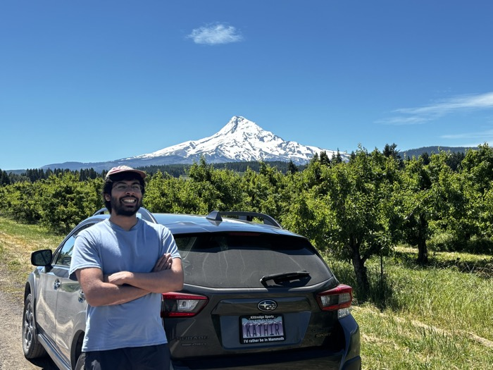
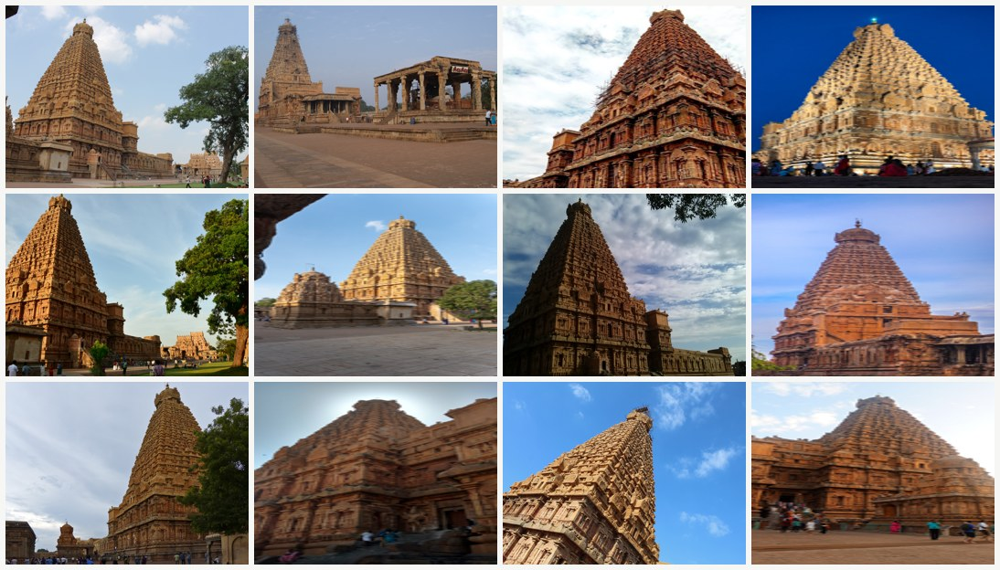
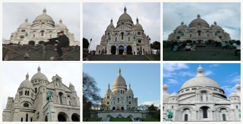
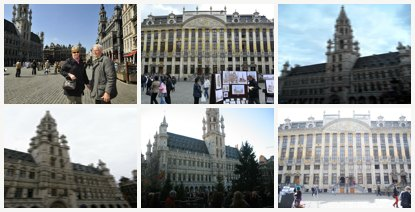
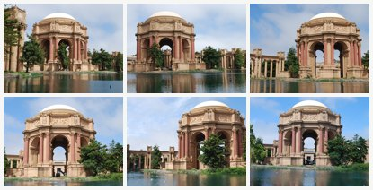
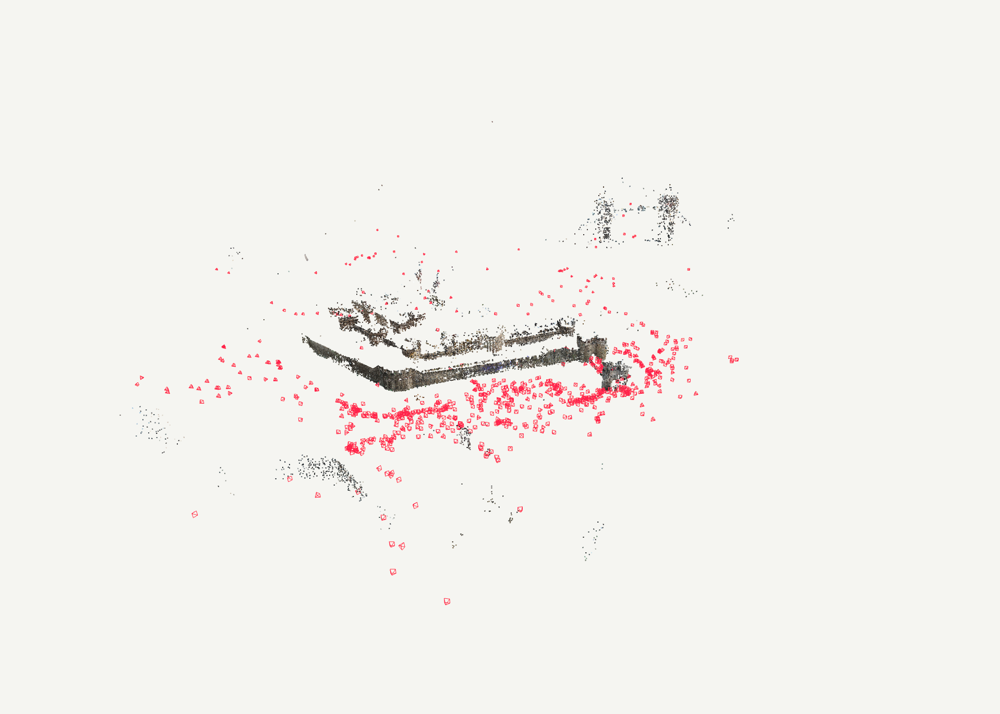
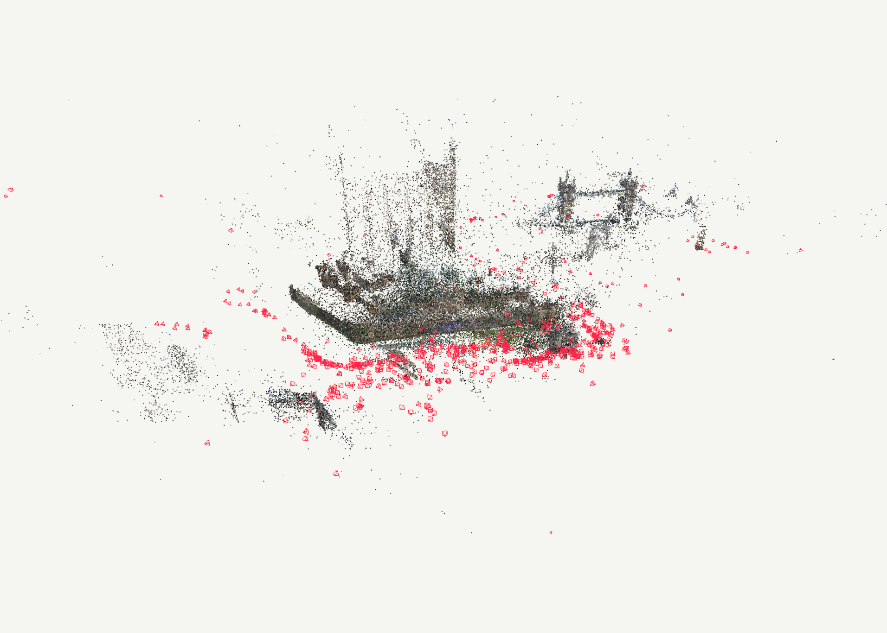
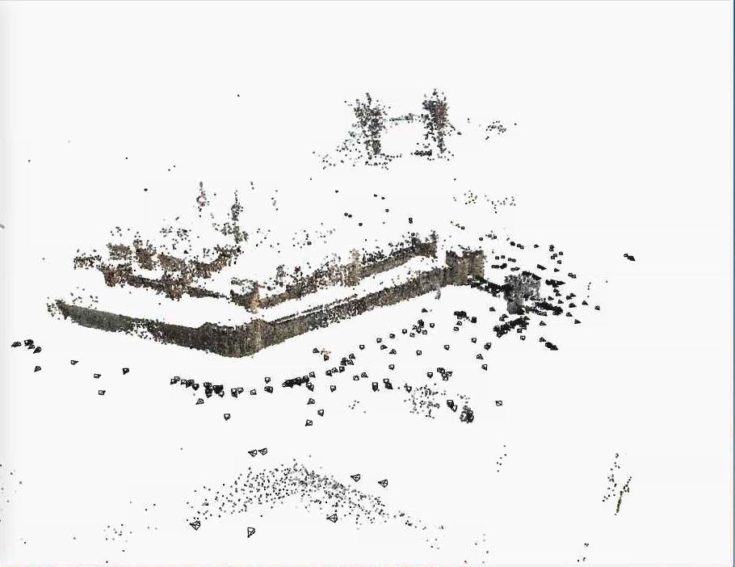
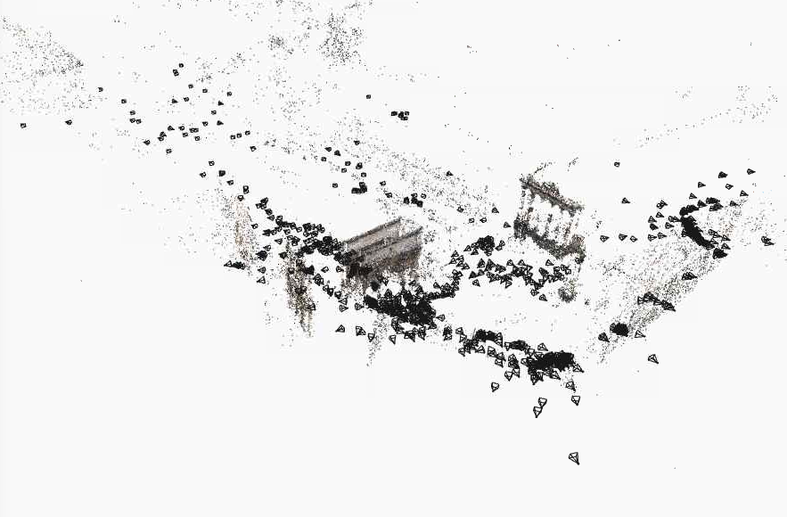

ECCV 2026 · Structure-from-Motion Workshop (SFM-DL) · Malmö
Hierarchical Structure-from-Motion
Scales Feedforward Reconstruction
Kathir Gounder · The Borg Lab, Georgia Tech
whoami

Kathir Gounder
- MS CS @ Georgia Tech, The Borg Lab (Dr. Frank Dellaert)
- Contributor to GTSAM (factor-graph optimization, 4k+ ★)
- Maintainer of GTSFM (global SfM pipeline, 500+ ★)
- First author, ECCV 2026 SFM-DL (this talk)
- SWE intern @ Esri
the problem
Structure from Motion
Recovering camera poses and 3D scene geometry from an unordered collection of 2D photographs. No GPS, no calibration, no ordering.

256 internet photos, unordered
Brihadeeswarar Temple, reconstructed
background · classical SfM in one slide
Incremental vs. global
Incremental (COLMAP)
Find a good first pair, triangulate, then one image at a time: register → triangulate → bundle adjust → remove outliers, repeat. Robust because outliers are filtered at every step; slow because it is serial by construction.
Global (GLOMAP, GTSFM)
Match all retrieved pairs up front → two-view poses form a view graph → rotation averaging, then global positioning solves all cameras and points at once → one global BA. Parallel-friendly; but outliers must be rejected globally, and a single false positive can degrade the solution.

Global SfM stages (GTSFM, our lab's distributed framework and the predecessor of this work). ⚡ parallel and distributed; ‖ bottleneck: all parallel tasks must finish before the next stage.
background · in factor graph language
Bundle adjustment vs. the VIO you know
Cameras x, landmarks l, black squares are projection factors. VIO adds dashed odometry and prior factors chaining consecutive cameras. SfM has no such chain: the images are unordered, so every constraint flows through the landmarks.
the problem · same pipeline, any scene

Sacré-Cœur, Paris

Grand Place, Brussels

Palace of Fine Arts, SF
the tension
Two paradigms, neither wins alone
Classical SfM
Accurate, battle-tested.
But optimization-heavy: hours to days at scale.
Feedforward models
One forward pass, seconds.
But GPU memory walls, and accuracy degrades as image count grows.
why now
Three curves crossing
The moment
- SfM workloads are exploding, digital twins, urban modeling, asset capture, yet large runs still take hours to days
- GPU compute is universal, but classical SfM can't fill a fleet
- Feedforward reconstruction is exploding, instant, robust, but capped at ~hundreds of images
What our architecture buys
- Progressive results: clusters land in minutes, users see partial models immediately, not nothing for 8 hours
- Fleet-shaped work: leaves are independent GPU jobs, parallel, distributable, autoscalable
- Graceful failure: a bad branch degrades one cluster; low-evidence cameras ship pose-only instead of poisoning the model
the idea
Use the network where it's strong,
small, tightly-connected local problems,
and classical optimization where it's strong,
stitching locals into a consistent whole.
pipeline · overview
The pipeline at a glance

MegaLoc retrieval prunes the candidate pair set before SIFT matching and two-view verification, producing a verified image graph, recursively partitioned into overlapping clusters by nested dissection. Each cluster is reconstructed by VGGT-Omega and refined by a pose-anchored bundle adjustment, fully in parallel, as are the bottom-up Sim(3) merges. A single unconstrained bundle adjustment over the re-triangulated global tracks produces the final reconstruction. Colored boxes mark our contributions; gray boxes are standard components.
pipeline · 1 of 3
A verified view graph, cheaply
- Retrieve: MegaLoc proposes candidate pairs (k=120 neighbors/image, similarity ≥ 0.15), O(kN), not O(N²)
- Match: 8,192 SIFT features per image, batched GPU (Torch) matcher
- Verify: 5-point estimation in locally-optimized RANSAC (PoseLib, 2 px) + a two-view bundle-adjustment polish, failed pairs discarded
- At 1DSfM scale we verify just 2.8–5.8% of all pairs (Alamo: 117,998 of 4.2M)
- Empirical: MegaLoc's k-NN graph tracks physical adjacency, scene bottlenecks survive as graph bottlenecks, exactly what the partitioner needs
the elegant core
From factorization to partition
- Every bundle adjustment iteration solves a sparse linear system. Its sparsity pattern is the covisibility graph: two cameras couple only if they observe common structure.
- Sparse Cholesky solves it by variable elimination. An elimination ordering is the sequence in which unknowns are removed. Each removal couples the neighbors of the removed variable. New couplings are fill-in, and fill-in is the cost.
- Nested dissection minimizes fill-in at scale: find a small separator, eliminate each half independently, eliminate the separator last, recurse.
- The realization behind this paper (Dellaert lab, HyperSfM 2012): that recursion is also a hierarchical SfM partition.
"The resulting separator cameras simultaneously define the overlap required for hierarchical reconstruction and the separator variables of the underlying sparse bundle-adjustment system, aligning the reconstruction hierarchy with its computational structure."
pipeline · 2 of 3 · the elegant core, live
Partition the view graph = choose the elimination order
Same system, two orderings. Magenta fill-in is wasted computation and forced coupling between clusters. Nested dissection confines all work to two independent blocks plus a small separator border: the blocks are our clusters, the border is our overlap. That containment is the whole method.
view graph · cameras & covisibility
Hessian sparsity · fill-in:,
cluster tree
the elegant core · in practice
From elimination tree to cluster tree
Post-processing the raw tree
- Absorb tiny cliques upward, a 5-camera cluster wastes a forward pass
- Split oversized cliques (> GPU budget, ~70 cams), recursively
- Inherit separators downward, every child carries its ancestors' interface cameras as overlap
Why it's the heart of success and failure
- Fat separators → well-anchored merges (Brussels: root cluster alone spans the plaza)
- Starved separators → merges with zero evidence (Thanjavur's root: 4 cameras, no internal edges)
- Over-splitting → chains of near-identical nodes doing redundant work
pipeline · 3 of 3
Reconstruct independently, merge bottom-up
Per cluster: VGGT-Ω poses + intrinsics · SIFT tracks · robust BA, fully parallel. Then: Sim(3) alignment on shared cameras → merge BA → retriangulation → final unconstrained BA.
pipeline · the merge, again
Same machinery, harder scene
Brihadeeswarar Temple: repetitive architecture, the hardest case for wide-baseline matching. Clusters assemble bottom-up into the full site.
how it's built
The systems story
Stack
- Dask, cluster tree scheduled as a task graph; each leaf (VGGT-Ω + cluster BA) is an independent task fanned across workers
- GTSAM, all optimization as factor graphs
- Torch GPU frontend, batched SIFT extraction + matching (8,192 feats/img) · PoseLib minimal solvers (LO-RANSAC, 2 px)
- METIS nested dissection · VGGT-Ω in PyTorch · COLMAP-format interchange throughout
End-to-end runtime (single H200 node)
Faster end-to-end than a classical exhaustive frontend alone at this scale, and the leaves haven't left one node yet.
results · accuracy
Competitive with, and often beating, optimization-only SfM
On the remaining scenes we are within a few AUC points; the gap concentrates at the strictest threshold, where optimization-based global SfM retains an edge.
AUC@N°: angular pose error per camera pair vs. ground truth → fraction of pairs under a threshold, swept from 0 to N° → area under that curve. Rewards being far under the threshold, not just under it. 3° is the strictest test.
results · robustness at 3,000 images (1DSfM internet collections)
GLOMAP-level recall, bounded failure tail


Tower of London · identical view graph fed to both backends.
it runs end-to-end
Real collections, full pipeline


honest ledger
What's still broken
- Strictest accuracy (AUC@3°) still trails pure global SfM on some scenes
- Classical matching + verification remains the runtime bottleneck
- Explicit dependence on classical SIFT tracks: triangulation, merging, and refinement all inherit their failure modes
- Merging is brittle when a parent node retains too little track evidence after filtering; low-evidence interfaces need explicit handling
- Quality is coupled to the foundation model and the partition quality
- Next: let the model's noise-robustness eat the verification stage entirely
conclusion
Conclusion
- A hierarchical SfM framework that integrates multi-view foundation models with classical geometric optimization for large-scale reconstruction
- Nested dissection aligns the reconstruction hierarchy with the computational structure of bundle adjustment: parallel clusters, principled merges
- Scales feedforward reconstruction to 3,000-image collections at GLOMAP-level accuracy, with bounded failure tails
Kathir Gounder · kathirgounder@gmail.com · github.com/kathirgounder · questions welcome, backup slides follow
backup · IMC PhotoTourism (no EXIF)
Full accuracy table, AUC@3°/5°/10°
| Scene (#img) | COLMAP | GLOMAP | Ours |
|---|---|---|---|
| Piazza San Marco (68) | 58.0 / 71.0 / 83.7 | 72.7 / 82.3 / 90.6 | 59.6 / 70.5 / 80.1 |
| St. Pauls Cathedral (142) | 72.7 / 78.9 / 85.0 | 74.2 / 80.2 / 85.8 | 64.5 / 75.6 / 86.0 |
| British Museum (176) | 61.6 / 72.7 / 83.9 | 62.0 / 72.7 / 83.5 | 53.8 / 63.2 / 78.2 |
| Lincoln Memorial (214) | 67.2 / 71.5 / 75.3 | 68.4 / 72.5 / 76.0 | 70.4 / 79.1 / 87.3 |
| Grand Place Brussels (234) | 68.7 / 76.6 / 84.2 | 71.8 / 78.5 / 84.6 | 71.9 / 79.5 / 86.6 |
| Sacré-Cœur (281) | 78.5 / 80.9 / 82.8 | 78.8 / 81.1 / 83.0 | 80.1 / 87.3 / 93.2 |
| Pantheon Exterior (320) | 79.4 / 83.5 / 87.2 | 77.0 / 81.8 / 86.2 | 73.6 / 82.6 / 90.4 |
| Sagrada Família (397) | 54.3 / 58.9 / 62.9 | 53.8 / 58.7 / 62.9 | 60.0 / 69.1 / 77.8 |
| Colosseum Exterior (499) | 80.7 / 86.1 / 90.1 | 80.5 / 85.8 / 90.5 | 66.4 / 76.1 / 85.4 |
All-pairs AUC; unregistered images count as failures. Intrinsics from VGGT-Ω (no EXIF used).
backup · 1DSfM internet collections
Nc / median / mean position error (m)
| Scene | 1DSfM+BA | GLOMAP | GLOMAP+CC | Ours |
|---|---|---|---|---|
| Alamo (2,915) | 529 / 0.30 / 2e7 | 746 / 0.36 / 39.8 | 637 / 0.29 / 3.8 | 738 / 0.44 / 4.6 |
| Madrid Metropolis (1,344) | 291 / 0.50 / 70 | 427 / 1.40 / 9.9 | 275 / 1.02 / 6.3 | 365 / 1.93 / 9.8 |
| Piazza del Popolo (2,251) | 308 / 2.10 / 7.0 | 451 / 0.38 / 5.1 | 395 / 0.36 / 1.1 | 420 / 0.47 / 1.9 |
| Roman Forum (2,364) | 989 / 0.20 / 3.0 | 1,366 / 0.28 / 594 | 1,124 / 0.23 / 1.3 | 1,278 / 0.69 / 9.6 |
| Tower of London (1,576) | 414 / 1.00 / 40 | 586 / 1.01 / 28.4 | 479 / 0.43 / 4.4 | 584 / 2.34 / 11.1 |
Same MegaLoc view graph for GLOMAP and us, isolates the backend. Claim: near-GLOMAP registration (within ~1% on Alamo/ToL) with mean errors lower on every scene; GLOMAP+CC bounds errors only by deleting 12–36% of cameras.
backup · recall vs trust
Reference cameras within 10 m (% of Nref)
| Scene | GLOMAP | GLOMAP+CC | Ours |
|---|---|---|---|
| Alamo | 93.2 | 82.3 | 92.2 |
| Madrid Metropolis | 86.8 | 60.1 | 66.8 |
| Piazza del Popolo | 96.5 | 85.7 | 89.7 |
| Roman Forum | 94.6 | 79.8 | 78.8 |
| Tower of London | 84.6 | 74.7 | 79.7 |
vs GLOMAP+CC (the like-for-like bounded-error config): we localize more within 10 m on 4/5 scenes while registering more cameras on all 5.
backup · frontend cost
Verified pair budget vs exhaustive
| Scene | Exhaustive N(N−1)/2 | Ours | % |
|---|---|---|---|
| Madrid Metropolis (1,344) | 902,496 | 51,979 | 5.8% |
| Tower of London (1,576) | 1,241,100 | 53,734 | 4.3% |
| Piazza del Popolo (2,251) | 2,532,375 | 97,949 | 3.9% |
| Roman Forum (2,364) | 2,793,066 | 153,154 | 5.5% |
| Alamo (2,915) | 4,247,155 | 117,998 | 2.8% |
MegaLoc retrieval (k=120, sim ≥ 0.15) → O(kN) frontend instead of O(N²).
backup · the two observations, in numbers
Calibration ladder & hierarchy ablation
Focal error (British Museum, no EXIF)
| Heuristic 1.2×max(w,h) | 24.7% |
| Two-view self-calibration | 7.5% |
| VGGT-Ω predicted | 1.1% |
| Anchored BA refinement | 1.1% |
| + final free BA | 0.5% |
Piazza San Marco (68 img), AUC@3/5/10
| VGGT-Ω single pass | 41.7 / 59.9 / 77.5 |
| + retri + free BA | 62.6 / 74.0 / 84.8 |
| partitioned (≤30) + merged | 62.1 / 75.3 / 86.8 |
| + retri + free BA | 65.2 / 77.2 / 87.8 |
backup · the linear algebra in one slide
From rubber bands to block structure
- Objective: minθ Σobs (i,j) ‖ π(Ti, Ki, Xj) − uij ‖², every observation is a rubber band between one camera and one point
- Each LM iteration: linearize → solve (JᵀJ) δ = −Jᵀr, the Hessian couples two unknowns iff they share an observation
- Points eliminated first (Schur): each point is a tiny star, folding them in couples exactly the cameras that co-observe → the covisibility graph = camera-Hessian sparsity
- Nested dissection order → arrowhead form: two independent diagonal blocks + separator border → solve blocks in parallel, then the small separator system, then back-substitute = reconstruct clusters, merge, refine
backup · when the root fails
Sibling merging, the robustness story
Thanjavur: doppelganger filtering starved the root separator (4 cameras, zero internal edges) → siblings seat against each other via cross-triangulated shared tracks, then retriangulation + final BA.
backup · qualitative
Same view graph, two backends
Tower of London, ours
Roman Forum, ours
backup · failure case study (if asked "when does it break?")
When the merge breaks, and the fix
- Symptom, temple scene: every cluster reconstructs perfectly, final merge lands at garbage scale
- Root cause, per-cluster BA filters prune boundary tracks, starving the merge interface: two 150+-camera clusters shared only 6 surviving landmarks
- Fix, re-triangulate the global tracks on each side of the interface → 1,003 anchor pairs → robust Sim(3) with inlier-spread + second-consensus gates → temple assembles
- Lesson, merge confidence must be proportional to interface evidence; weak seats demote to pose-only and are rescued by global retriangulation
backup · where this goes
The model can vet its own inputs
- New result (RobustVGGT, 2026): VGGT's final-layer attention separates geometrically consistent views from distractors, training-free
- Appearance descriptors (DINOv3) fail exactly where SfM needs help: look-alike but non-overlapping views (doppelgängers)
- Their limit is ~100 images per pass; our clusters are the natural scope, internal-signal-gated membership at 3,000-image scale